Atlas
Delegate the work. Keep the judgment.
A control center that lets people hand multi-step work to AI agents, approve exactly what goes out, and recover the work when a run breaks.
View tutorial/prototype- Role
- Sole product designerProduct direction, IA, interaction design, UX writing, visual direction, QA
- Timeframe
- 4 weeks
- Build
- Coded with AI (Codex)Under my direction
- Prototype
- Live prototypeLink coming
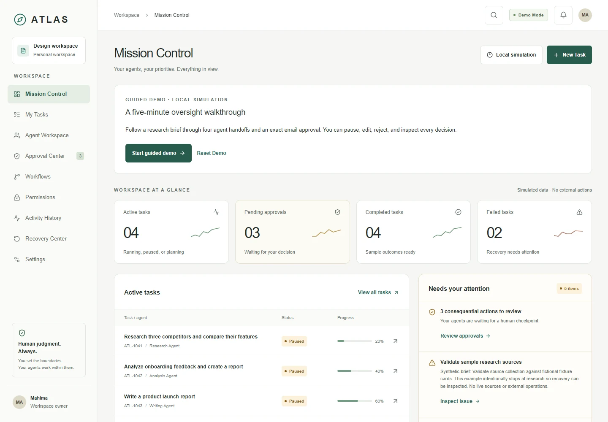
Mission Control. The ATLAS workspace.
Handing work to an agent turns doing into supervising. Chat tools hide what supervision needs.
The risk sits at the handoffs, every time control passes between the person and the agent. One everyday task shows all four.
“Compare Northstar, Relay and Fieldwork, then email the summary to 8 reviewers.”
Products and recipients are fictional.
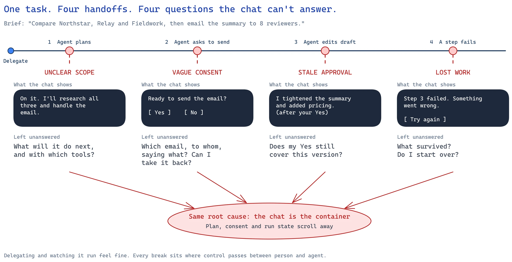
Figure 1. One task, four handoffs. Each break leaves the person with a question the chat can't answer.
Unclear scope
The plan lives inside the model. Steps scroll past in the conversation.
What will it do next, and with which tools?
Vague consent
"Send the email?" is a plain yes or no. One yes feels like permission for every email.
Which email, to whom, saying what? Can I take it back?
Stale approval
The agent edits the draft after I approve it. My old yes quietly carries forward.
Does my approval still cover this version?
Lost work
The run stops at step three. Nothing shows which finished work survived.
What survived, and do I have to start over?
People who hand multi-step work to AI agents need to know three things at every handoff:
- What will happen next
- Exactly what they are approving
- What survives a failure
The guidance already says what oversight needs. Chat-style tools have nowhere to keep it.
I built ATLAS first, then checked it against published guidance and my own QA audit. I kept evidence and assumptions apart.
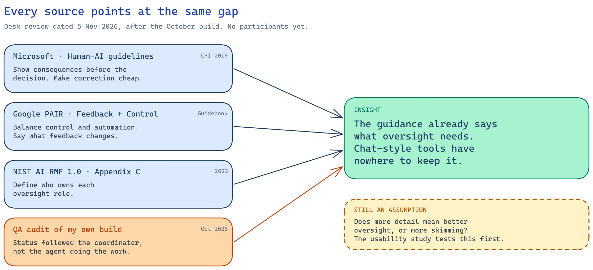
Figure 2. Four sources, one insight. The open assumption is the first thing the study tests.
One question, four principles. Every later decision points back here.
How might we help people supervise delegated agent work, decide before consequential actions, and recover without losing finished work?
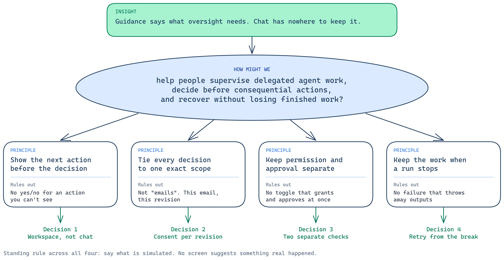
Figure 3. The spine of the case study. Each principle rules something out, and each one led to one decision.
For each part of the job, the familiar pattern failed at a handoff.
I compared the pattern most agent tools use with the direction ATLAS took, part by part.
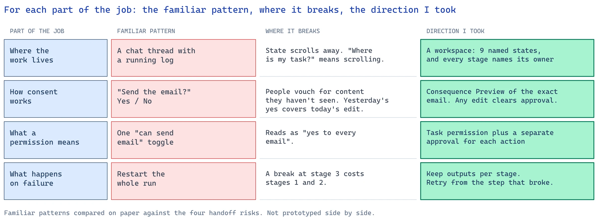
Figure 4. Familiar pattern vs. the direction I took. I compared them on paper, not as side-by-side prototypes.
Why these directions won
Each one keeps the state a supervisor needs in view, so the four questions from the problem section have an answer on screen.
What they cost
More to learn than one text box, and more reading at each gate. I chose that friction on purpose and made density the first thing to test.
Four decisions shaped what ATLAS is.
Each one uses the same format: problem, options, choice, trade-off, screen.
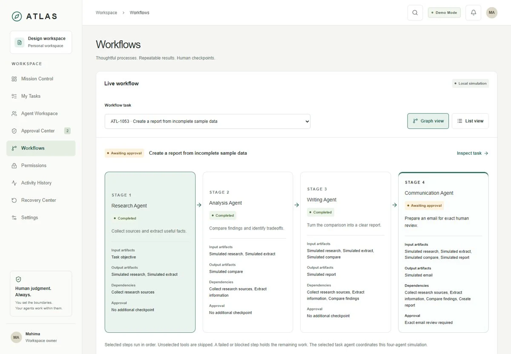
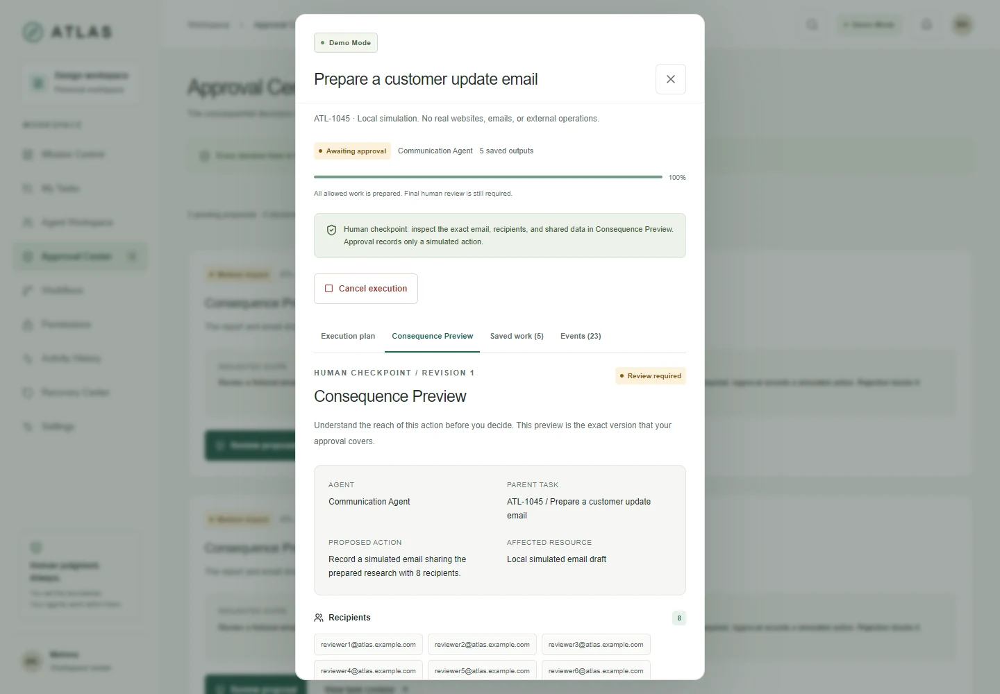
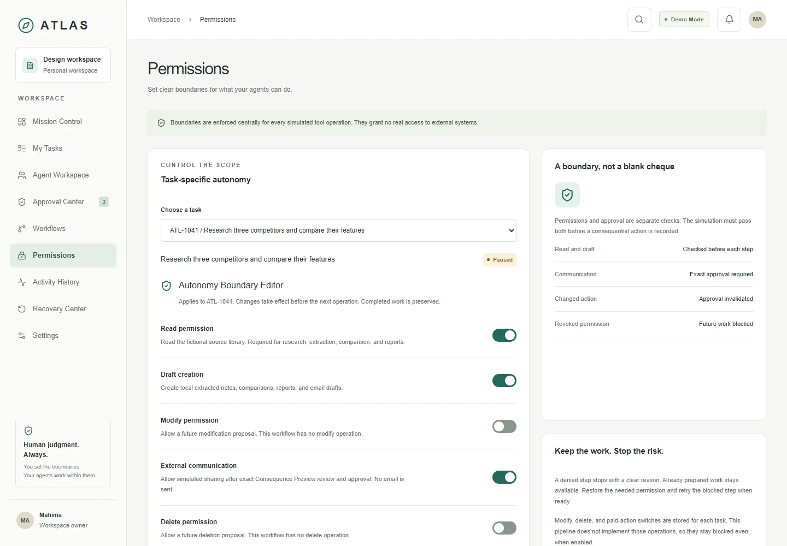
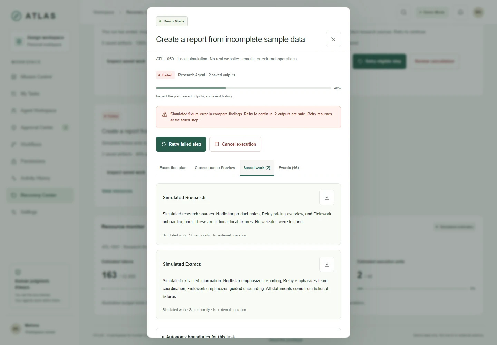
Calm by default, loud on purpose.
A quiet enterprise workspace with one restrained accent, so the single amber "Review required" badge stands out.
Every badge: a dot and a word, never colour alone.
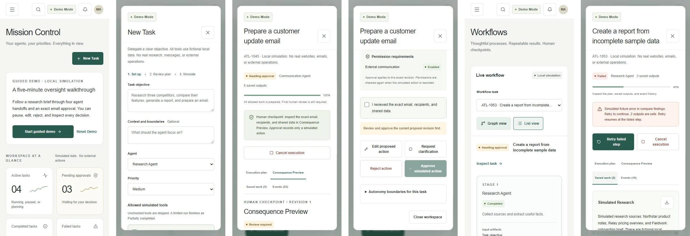
At 375 px, navigation moves into a menu, the graph becomes a list, and every decision control stays within reach.
Verified in the build
Every text colour passes WCAG AA contrast
Zero automated A/AA violations on checked screens
Focus trap, Escape and return focus in dialogs, 3 px focus ring
44 px minimum targets, reduced motion, a list alternative to the graph
A Demo Mode chip in the header and every dialog
What I'd fix next
Badges are 9 px. Set a 12 px floor.
Collapse 18 type sizes into 6 steps
Map 116 hard-coded colours onto the token set
Test with a real screen reader and real zoom
Codex wrote the code. I directed it, reviewed it and decided when it was done.
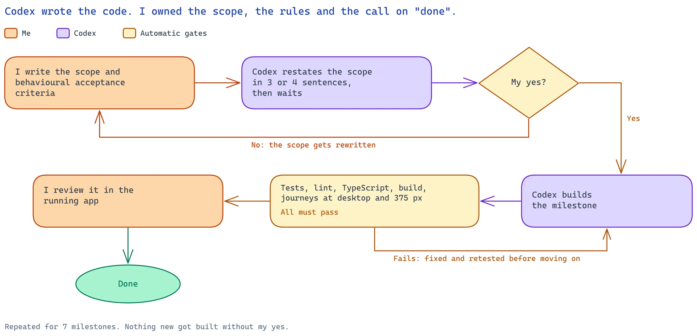
Figure 5. Nothing new was built without my yes, and nothing counted as done until I'd reviewed it in the running app.
What I directed
Scope for every milestone, restated back to me before building
Acceptance criteria a test can check: "No approval survives an edit"
All product, IA, interaction and UX writing decisions
What the gates I set caught
Status showed the coordinator, not the agent doing the work
A stale tab lost a task made in another tab
The guided demo ticked steps after a rejected plan
Copy called a real-looking address "fictional"
Where I said no
A cloud code review that would have sent the source code off my machine
A forced major downgrade to clear a lint-tooling warning. I documented it instead.
A working, tested oversight model. Not yet tested with people.
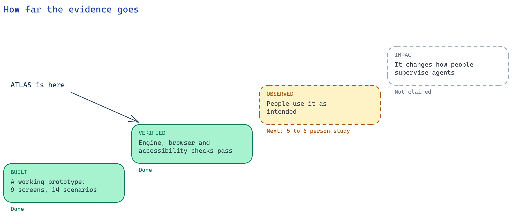
Figure 6. Every claim in this case study sits on the first two rungs.
What exists
9 screens, 4 agents, 9 states, 6 permissions, 14 seeded scenarios
Passing engine, safety, journey and accessibility suites at desktop, tablet and 375 px
A static build ready to host
What doesn't exist yet
Usability results, task success or business impact
WCAG conformance. Only clean automated scans so far.
Live AI. All agents are simulated.
What production would need
Durable server-side jobs, not browser storage
Real security behind permissions
An undo window for actions that can be reversed
Plan review for plans that change between runs
The worst bug was the problem I was designing against. Status showed the wrong agent, which is exactly the "who did this?" confusion ATLAS exists to prevent. Visible responsibility needs a test, not just intent.
Honesty became a design constraint. "Say what is simulated" shaped real UI: the Demo Mode chip, labelled sample charts, and milestones that tick only when work happened.
My riskiest decision is the one I most want tested. Consequence Preview shows everything, and that may be too much.